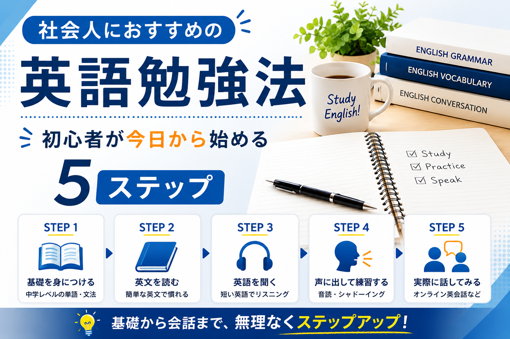

このポートフォリオサイト
Web制作とAIを活用したコンテンツ制作を紹介するために、自主制作しているポートフォリオサイトです。構成・コーディング・デザインを担当しています。
Ryu
掲載内容には、実際の受注実績のほかに「Sample Project(学習用サンプル)」「Learning Project(学習中の制作物)」 「Personal Project(自主制作)」を含む場合があります。実案件ではないものは、それぞれのラベルで明示しています。

Personal Project英語学習を始めたい社会人を想定し、「何から、どの順番で勉強すればよいか」という検索意図に沿って制作したSEO記事です。中学レベルの基礎学習から実際に英語を話すまでを5ステップで整理し、初心者が行動に移しやすい構成を意識しました。
AIを使って副業を始めたい初心者を想定し、「どんな仕事を選ぶか」「何を学ぶか」「どう実績を作り、案件応募まで進むか」という検索意図に沿って制作したSEO記事です。初心者におすすめのAI副業5選と、仕事を選ぶ→学ぶ→作る→見せる→応募する、という5ステップを中心に構成しました。
現在、掲載できる制作物はありません。今後、日英翻訳の制作物を追加していく予定です。
現在、掲載できる制作物はありません。今後、note記事を追加していく予定です。
現在、公開できる運用実績はありません。今後Instagram運用に取り組んだ際は、 投稿企画・制作内容・分析・改善内容などをケーススタディとして追加していく予定です。
掲載内容についてのご質問や、お仕事のご相談がございましたら、お気軽にお問い合わせください。
お問い合わせはこちら